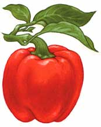

Did you know that all baby peppers start out green, then change color as they mature? In fact, when you’re growing bell peppers, some stay green until they mature to yellow or red, while others may turn white, lilac or purple before maturing to red, yellow or orange.
You can eat peppers at whatever stage you prefer, but fully ripe peppers taste better and are more nutritious. Sugars and other flavor compounds accumulate during the final stages of ripening, and vitamin C content often doubles. The color change in ripening peppers is caused by the breakdown of chlorophyll, which coincides with the maturation of the seeds.
For example, ‘Sweet Banana’ peppers are a pale, yellowish-green when the fruits are immature, then they slowly change to yellow, then orange and finally red.
For early yields of colorful sweet peppers, it’s best to choose varieties that waste no time changing to their fully ripe color and flavor. Varieties that mature to red far outnumber those that mature to orange or yellow. The best fast-ripening red peppers to grow are ‘Gypsy,’ ‘Lipstick’ and ‘Ace.’
At the end of the season, peppers picked when they have just begun to change colors will continue to ripen indoors when kept in a warm place. For more on how to grow peppers, see About Peppers.
|
 JUDITH ANN GRIFFITH The color change in ripening peppers is caused by the breakdown of chlorophyll, which coincides with the maturation of the seeds. |
|
|